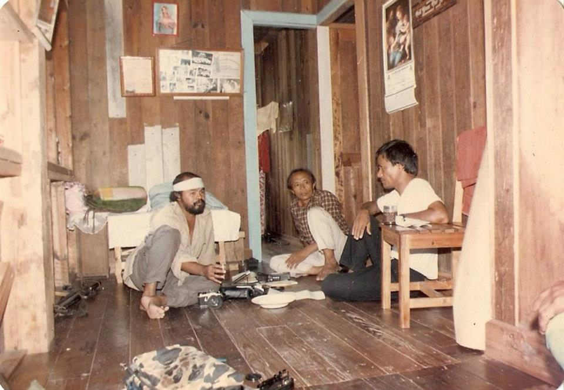
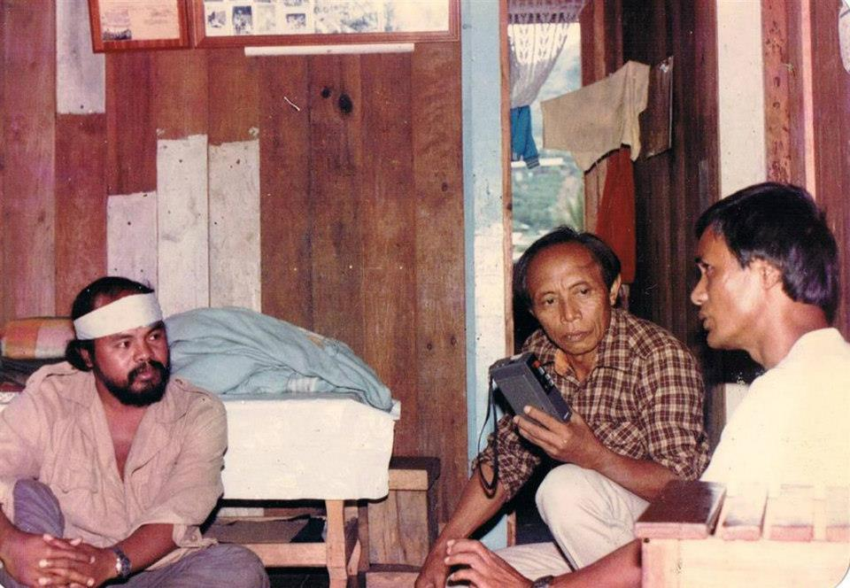

Ka Ambo's iconic photo of him reading the papers with a "baby armalite" behind him was an apt illustration of his image as both an intellectual and a revolutionary. Photo taken with permission from a Facebook post of De-i Balweg.
Conrado Balweg was born in Malibcong, Abra on 29 December 1942 and was murdered by his former New People's Army (NPA) comrades on 31 December 1999. Although the media had labeled his ethnicity as Tingguian, he was actually an iVanaw, his parents having originally come from Pattikyan (Pantikian), Balbalan, Kalinga and Malibcong being a cultural territory of the Vanaw people.
A member of the Roman Catholic congregation Societas Verbi Divini (SVD), he was ordained priest on 27 November 1970 by Pope Paul IV. The logging juggernaut Cellophil Resources Corporation (CRC) had intruded into the Vanaw territory at around that time, and the World Bank-funded Chico River Dam project in Kalinga had begun to be implemented in Kalinga without due consultation with the natives. Incensed by these developments, he took up arms against the Marcos regime and joined the NPA in the late '70s. He gained fame through the mid-'80s under the Lumbaya Company as "Robin Hood of the Cordillera" or more popularly, "Rebel Priest" (his 1987 biopic starring Philip Salvador was thus titled, "Balweg, the Rebel Priest" -- see movie at the bottom of this page).
Balweg broke away from the NPA shortly after the 1986 EDSA Revolution to form the Cordillera People's Liberation Army (CPLA) with Ortega Bruno. He entered into a vojong (peace agreement) with then President Corazon Aquino which paved the way for the creation of the Cordillera Administrative Region (CAR) in 1987 through Executive Order 220. He eventually formed and headed the Cordillera Bodong Adminstration (CBAd), one of the three transitory bodies -- the other two being the Cordillera Executive Board (CEB) and the Cordillera Bodong Assemby (CBA) -- which were originally designed to facilitate the establishment of a constitutionally-mandated "Cordillera Autonomous Region," a dream that continues to elude realization to this day.
Conrado "Ka Ambo" Balweg (with microphone) speaks before a throng of government and tribal representatives at the Saint Williams Academy in Tabuk, Kalinga. To his left are pangat 'tribal chief or leader' are his fellow iVanaw and relative, Augustus "Gus" Ulat Saboy, and a close associate, Ama Yag-ao of the Butbut tribe. Saboy and Yag-ao eventually joined Balweg in the interim regional body, Cordillera Bodong Administration. They parted ways years later over policy differences, but maintained communication thereafter. Photo by Romulo Tangbawan
I was 10 when Balweg and his dozesn of sipla (CPLA) trooped to Tabuk sometime in 1986 for a dialogue with the military and other government representatives. My father was then the manager of DZRK, Kalinga's sole radio station at the time. On several occasions, I had sat in with anchors Magdalena Calilung and Nayza Maga-ao (now Lopez) in the radio booth and tried but failed miserably to do "radio announcing".
It was, however, that privilege which afforded me a front row seat view of what would prove to be a historic event not only for Tabuk but for the Cordillera as well. Prior to Ambo's arrival, my father, along with photojournalist Guido Kub-ao, had already interviewed him somewhere in Mountain Province, if my memory serves me right. Ka Ambo being interviewed by Gus Saboy (center) and Guido Kub-ao (left), ca. 1986.
Everyone in the neighborhood wanted to catch a glimpse of our local hero whose life had become legendary -- made more so a year later by the release of his biopic which we promdi kids, wide-eyed would-be Balwegs, watched as soon as it was shown by some enterprising dudes who turned their house into a mini-cinema and charged a 50-centavo entrance fee from each viewer. We chattered about the film with such fervor long after that, punctuating our narrations with our miserable attempts at doing ala-Ka Ambo stunts in the face of an imagined tora-tora strike.
Now that he was in town, the drumroll became deafening and feverish for us. We were to finally see the Rebel Priest in the flesh! Despite my childish (or childlike) excitement, I somehow sensed the gravity of the situation. We were then in the crowded Saint Williams Academy (SWA) gymnasium, tension gripping the air as we watched the armed sipla enter the building and quietly sit in the upper bleachers. Many of them sported long hair, and were dressed in a mix of fatigues and civilian clothes -- as we imagined any true rebel should look. In the same rebel fashion, some also hefted customized guns like the one held by a guy who dovetailed a wooden stock to his metal-and-plastic rifle. Heavily armed government troopers were also all over the place, outnumbering the siplas.
There was this palpable fear that a single intentional or unintentional gunshot could turn the gym into a bloody graveyard, but somehow those at the negotiating table -- the rebel priest in his old, black jogging pants, blue shirt and green jacket; the tape recorder- and camera-wielding newsmen; several of our veteran bodong negotiators, all respected tribal chiefs (pangat) and leaders; the high-ranking military officers --- somehow gave us assurances of peace for despite their generally stern looks, not one of them seemed to be spoiling for a fight. Seeing my father seated at Ambo's left and other familiar faces around them (like Jose "Pepe" Daguio and Rene Tejano of our local Radyo Ng Bayan) also somehow told me everything was going to be all right.
In hindsight, I think it fitting that the two iVanaw blood relatives and intellectuals -- one, a former theologian and a seasoned warrior, and the other, a customary law expert and veteran journalist -- were working together to help hammer out a significant piece of a road map to local peace. For after all, they were from Kalinga's "Most Peaceful Tribe," according to the Rotary Club of Tabuk.
Of course, those on the Left think otherwise. For them, Ka Ambo was a traitor to the revolutionary cause and Gus Saboy was just another agent of the State. No surprise there at all. For in every ideologically-driven conflict, the parties involved tend to paint the world in black and white, so depending on who is telling what, one side is deluded and wrong while the other side always believes what is unquestionably true and does what is obviously right. But I digress.
And then it was over. I don't think I ever paid particular attention to all the speeches and agreements made on that day, because I don't remember any of those. I guess I was too excited or too young to keep tabs on such "forgettable" details.
Sighs of relief and a muted celebration led us as we half-hurriedly exited the building. There was a flurry of people and cars moving, and I next found myself in the radio station trying to catch a glimpse of Ka Ambo in the radio booth. Another flurry of movements, and this time I was in the second row of a blue Nissan Patrol of the local Philipine News Agency (PNA). A fellow iVanaw, Paterno Balansi, who I think was already the head of PNA Kalinga by that time, was at the driver's seat.
I don't remember who else were there and who were seated where. I only recall that everyone was rushing and someone said there was no more space for everyone, and then Ka Ambo had me sit on his lap. So you could imagine how proud my bratty self was at that very moment. This time it wasn't just a front row seat -- I was on the stage with the star of the season! For a child from the boonies that I was, no bragging rights could be greater.
The convoy sped through the highway and up the road to Camp Juan M. Duyan where two Huey choppers were waiting to whisk away Ka Ambo and a few of his trusted men. As the first one took off, we nervously watched as its rotors whacked the tip of one of the oldest trees lining the edges of the compound. Then the other bird flew, and we headed home. A Bell UH-1 Iroquois ("Huey") at Camp Juan M. Duyan, Tabuk, Kalinga. Augustus U. Saboy photo, ca. 1986.
And fast did time fly after that too, and Baguio City became my next home. In 1989, my father joined Ka Ambo at the CBAd and CBA which held office at the "Cordillera House" just across The Mansion. I was initially a frequent visitor to the CBAd headquarters, often just to gawk at the black-clad sipla and catch a glimpse of Ka Ambo who seemed busy all the time, entertaining visitors, presiding over meetings, and going places.
Then Citizen's Army Training (CAT) and high school blues, followed by Fundamentalist Christianity and college eventually took over my life, and my boyhood exhilaration over Ka Ambo and his sipla turned to teenage disinterest. I would read about him in the local papers from time to time, and listen in to some of the insiders' talks about the developing rifts in the CBAd, CBA and CEB and the Cordillera autonomy movement as a whole, but back then, even as a Political Science major, I tried to stay away from politics. I didn't even bother to ask my father when I learned that he and Ka Ambo had a heated exchange about their differences about who knows what. Throughout those years though, my father had always held Ambo in high regard, and took great pride in his amonakon (lit. nephew -- i.e., blood relative) being a brilliant and goodhearted iVanaw.
Then came the shock of Ka Ambo's murder in the hands of his former NPA comrades led by his very own brother. For us iVanaw in Baguio, it was a double whammy because not long before that, another prominent iVanaw, Col. Manuel Banggawan (PA, Res), was murdered by a fellow Kalinga.
For the NPAs and their Non-Government Organization (NGO) partners, justice was finally delivered to someone who committed "crimes against the people." For me though, his killing was not really about serving justice -- it was just an ideological statement, a test of loyalty for the perpetrators of a crime, an execution to crow about. Further, I cannot see how it could be an act on behalf "of the people" when the way "justice" was dispensed was as contrary to our indigenous tradition as the foreign ideology underlying it. For how could one justify killing someone who came home to make peace?
A few years ago, I visited manong Laurence Bayongan, a fellow iVanaw and close associate of Ka Ambo. (Sadly, he died of heart attack a day before Christmas last year). I was deeply grateful that he took some time off from his busy schedule that day for that chit-chat. He was then the city administrator of Tabuk. When our conversation turned to his time with Ka Ambo, he regaled me with stories about the man, most notably their brush with death in Manila after narrowly escaping from the Sparu (Special Partisan Unit), the communist death squad operating in urban areas. Laurence was one of those who strongly tried to dissuade Ka Ambo from going home that Christmas, or to convince him that he should at least take an army with him. "Patayen daka man!" (They will kill you), Laurence warned him, prophetically.
But Ka Ambo insisted on his plan, and he thought it indecorous to take an army of bodyguards with him when he was actually going home to initiate a dialogue with his brother Jovencio and other former comrades in the underground movement.
"What do you remember most about Ka Ambo?" I asked him. "He was, first of all, one of the kindest men I've ever known," he said. He once chastised the CPLA chief for not responding to his critics in kind, or at least writing something to defend himself against false accusations. "Bay-amon" (Let it go), the former priest would often say, harboring no ill will against his harshest critics. I agreed with manong Laurence when he added that that alone set him apart from many of us.
Just like everyone else, he was never perfect, notwithstanding that mythic aura of his hyped up on the silver screen. But without his imperfections, we could never fully identify with him. On the other hand, he refused to let his imperfections define his identity especially towards the end of his short life. For in his last moments, he left himself vulnerable when he could have armored himself with a cabal of loyal men willing to die for him; he offered to pull blood relatives and fellow combatants together to take a shot at peace, instead of pulling the trigger and delighting at the sound of a peace-shattering killshot.
In Howard Pyle's The Merry Adventures of Robin Hood, Robert O'Locksley died at the hands of a prioress, his blood relation. In the life story of the "Robin Hood of the Cordilleras," Conrado Balweg the ex-priest was killed with the consent of his own brother. In the first story, Locksley forgave the nun and made Little John swear he would not exact vengeance on the nunnery.
The second story is not so different -- had Ka Ambo gotten a few moments to speak, he would have said he forgave his brother, and would have urged the "Little Johns" of his life to seek the path of peace.
[Three of Ka Ambo's children, Biya, Jay and Dei, have posted a moving tribute to him @ HERE.


Photos above show Ka Ambo being interviewed by Gus Saboy (center) and Guido Kub-ao (left), right before he surrendered to the government. ca. 1986.